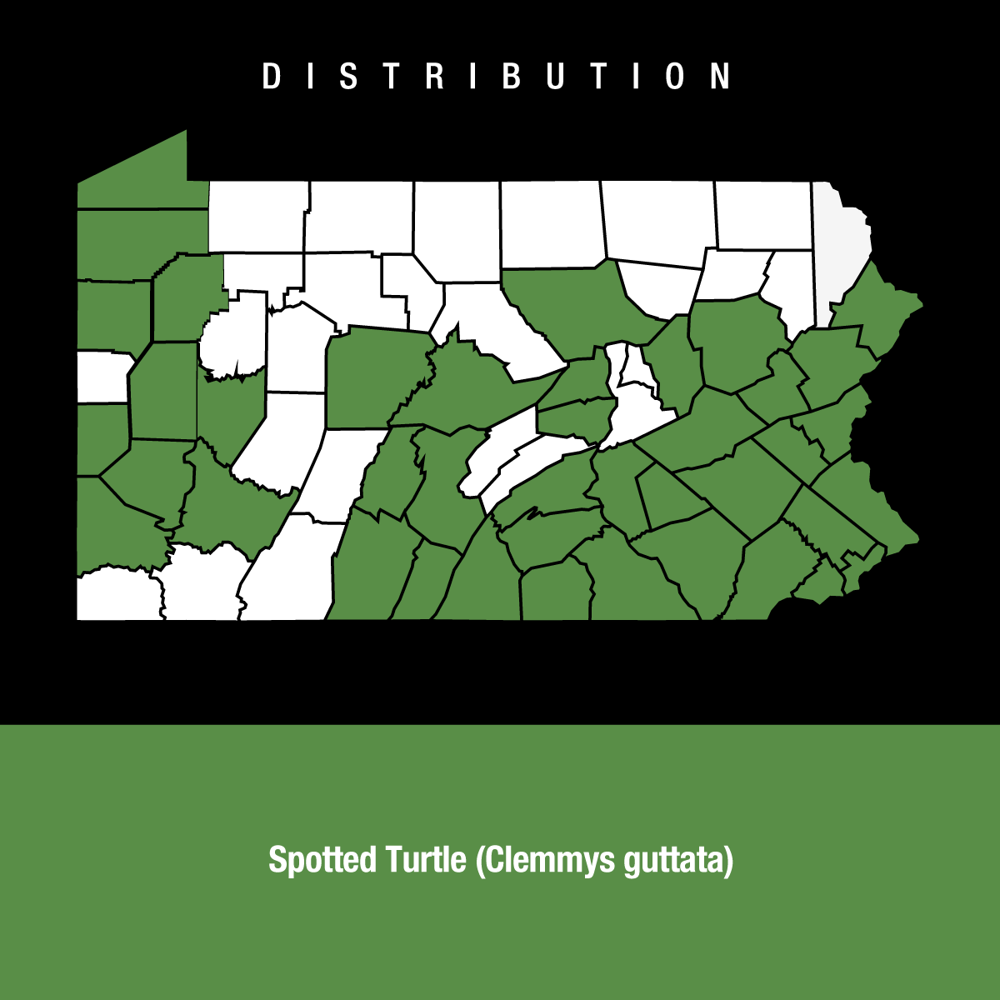
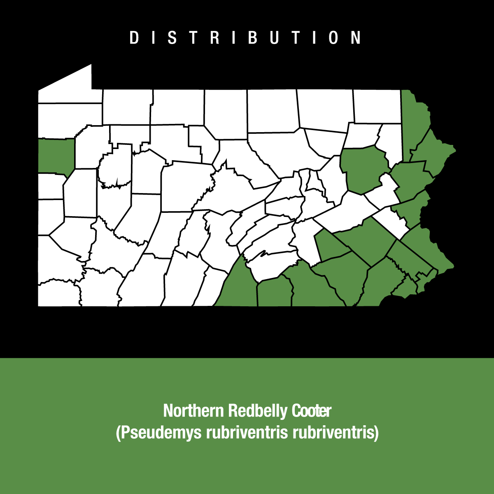

Painted Turtle
The painted turtle (Chrysemys picta) is the most widespread native turtle of North America. It lives in slow-moving fresh waters, from southern Canada to Louisiana and northern Mexico, and from the Atlantic to the Pacific. The turtle is the only species of the genus Chrysemys, which is part of the pond turtle family Emydidae. Fossils show that the painted turtle existed 15 million years ago. Four regionally based subspecies (the eastern, midland, southern, and western) evolved during the last ice age. The adult painted turtle female is 10–25 cm (4–10 in) long; the male is smaller. The turtle's top shell is dark and smooth, without a ridge. Its skin is olive to black with red, orange, or yellow stripes on its extremities. The subspecies can be distinguished by their shells: the eastern has straight-aligned top shell segments; the midland has a large gray mark on the bottom shell; the southern has a red line on the top shell; the western has a red pattern on the bottom shell. The turtle eats aquatic vegetation, algae, and small water creatures including insects, crustaceans, and fish. Although they are frequently consumed as eggs or hatchlings by rodents, canines, and snakes, the adult turtles' hard shells protect them from most predators. Reliant on warmth from its surroundings, the painted turtle is active only during the day when it basks for hours on logs or rocks. During winter, the turtle hibernates, usually in the mud at the bottom of water bodies. The turtles mate in spring and autumn. Females dig nests on land and lay eggs between late spring and mid-summer. Hatched turtles grow until sexual maturity: 2–9 years for males, 6–16 for females.
PHOTO BY GREG SCHECHTER DISTRIBUTION INFORMATION FROM: PAHERPSURVEY.ORG & PAHERPS.COM ADDITIONAL INFORMATION FROM: WIKIPEDIA

SPOTTED TURTLE
The spotted turtle (Clemmys guttata), the only extant species of Clemmys, is a small, semi-aquatic turtle that reaches a carapace length of 8–12 cm (3.1–4.7 in)[3] upon adulthood. Their broad, smooth, low dark-colored upper shell, or carapace, ranges in its exact colour from black to a bluish black with a number of yellow tiny round spots. The spotting patterning extends from the head, to the neck and out onto the limbs. Males and females can be distinguished by differences in plastron shape and eye and chin colouration. Spotted turtles are aquatic omnivores that inhabit a variety of semi-aquatic or in other words, shallow, fresh-water areas such as flooded forests, marshes, wet meadows, bogs and woodland streams in southern Canada (Ontario) and the eastern US: the eastern Great Lakes and east of the Appalachian Mountains.
PHOTO BY DAVE PAPE DISTRIBUTION INFORMATION FROM PAHERPSURVEY.ORG & PAHERPS.COM ADDITIONAL INFORMATION FROM WIKIPEDIA


SOFTSHELL TURTLE
PHOTO BY KIM PARDI DISTRIBUTION INFORMATION FROM PAHERPSURVEY.ORG & PAHERPS.COM ADDITIONAL INFORMATION FROM WIKIPEDIA

REDBELLY TURTLE
The spotted turtle (Clemmys guttata), the only extant species of Clemmys, is a small, semi-aquatic turtle that reaches a carapace length of 8–12 cm (3.1–4.7 in)[3] upon adulthood. Their broad, smooth, low dark-colored upper shell, or carapace, ranges in its exact colour from black to a bluish black with a number of yellow tiny round spots. The spotting patterning extends from the head, to the neck and out onto the limbs. Males and females can be distinguished by differences in plastron shape and eye and chin colouration. Spotted turtles are aquatic omnivores that inhabit a variety of semi-aquatic or in other words, shallow, fresh-water areas such as flooded forests, marshes, wet meadows, bogs and woodland streams in southern Canada (Ontario) and the eastern US: the eastern Great Lakes and east of the Appalachian Mountains.
PHOTO BY JERE7MY DISTRIBUTION INFORMATION FROM PAHERPSURVEY.ORG & PAHERPS.COM
MUD TURTLE
The spotted turtle (Clemmys guttata), the only extant species of Clemmys, is a small, semi-aquatic turtle that reaches a carapace length of 8–12 cm (3.1–4.7 in)[3] upon adulthood. Their broad, smooth, low dark-colored upper shell, or carapace, ranges in its exact colour from black to a bluish black with a number of yellow tiny round spots. The spotting patterning extends from the head, to the neck and out onto the limbs. Males and females can be distinguished by differences in plastron shape and eye and chin colouration. Spotted turtles are aquatic omnivores that inhabit a variety of semi-aquatic or in other words, shallow, fresh-water areas such as flooded forests, marshes, wet meadows, bogs and woodland streams in southern Canada (Ontario) and the eastern US: the eastern Great Lakes and east of the Appalachian Mountains.
PHOTO BY U.S. FISH AND WILDLIFE SERVICE HEADQUARTERS DISTRIBUTION INFORMATION FROM PAHERPSURVEY.ORG & PAHERPS.COM
SNAPPING TURTLE
The spotted turtle (Clemmys guttata), the only extant species of Clemmys, is a small, semi-aquatic turtle that reaches a carapace length of 8–12 cm (3.1–4.7 in)[3] upon adulthood. Their broad, smooth, low dark-colored upper shell, or carapace, ranges in its exact colour from black to a bluish black with a number of yellow tiny round spots. The spotting patterning extends from the head, to the neck and out onto the limbs. Males and females can be distinguished by differences in plastron shape and eye and chin colouration. Spotted turtles are aquatic omnivores that inhabit a variety of semi-aquatic or in other words, shallow, fresh-water areas such as flooded forests, marshes, wet meadows, bogs and woodland streams in southern Canada (Ontario) and the eastern US: the eastern Great Lakes and east of the Appalachian Mountains.
PHOTO BY Dakota L. DISTRIBUTION INFORMATION FROM PAHERPSURVEY.ORG & PAHERPS.COM
BOX TURTLE
The spotted turtle (Clemmys guttata), the only extant species of Clemmys, is a small, semi-aquatic turtle that reaches a carapace length of 8–12 cm (3.1–4.7 in)[3] upon adulthood. Their broad, smooth, low dark-colored upper shell, or carapace, ranges in its exact colour from black to a bluish black with a number of yellow tiny round spots. The spotting patterning extends from the head, to the neck and out onto the limbs. Males and females can be distinguished by differences in plastron shape and eye and chin colouration. Spotted turtles are aquatic omnivores that inhabit a variety of semi-aquatic or in other words, shallow, fresh-water areas such as flooded forests, marshes, wet meadows, bogs and woodland streams in southern Canada (Ontario) and the eastern US: the eastern Great Lakes and east of the Appalachian Mountains.
PHOTO BY NO AUTHOR LISTED DISTRIBUTION INFORMATION FROM PAHERPSURVEY.ORG & PAHERPS.COM
MUSK TURTLE
The spotted turtle (Clemmys guttata), the only extant species of Clemmys, is a small, semi-aquatic turtle that reaches a carapace length of 8–12 cm (3.1–4.7 in)[3] upon adulthood. Their broad, smooth, low dark-colored upper shell, or carapace, ranges in its exact colour from black to a bluish black with a number of yellow tiny round spots. The spotting patterning extends from the head, to the neck and out onto the limbs. Males and females can be distinguished by differences in plastron shape and eye and chin colouration. Spotted turtles are aquatic omnivores that inhabit a variety of semi-aquatic or in other words, shallow, fresh-water areas such as flooded forests, marshes, wet meadows, bogs and woodland streams in southern Canada (Ontario) and the eastern US: the eastern Great Lakes and east of the Appalachian Mountains.
PHOTO BY ONTLEY DISTRIBUTION INFORMATION FROM PAHERPSURVEY.ORG & PAHERPS.COM
WOOD TURTLE
The spotted turtle (Clemmys guttata), the only extant species of Clemmys, is a small, semi-aquatic turtle that reaches a carapace length of 8–12 cm (3.1–4.7 in)[3] upon adulthood. Their broad, smooth, low dark-colored upper shell, or carapace, ranges in its exact colour from black to a bluish black with a number of yellow tiny round spots. The spotting patterning extends from the head, to the neck and out onto the limbs. Males and females can be distinguished by differences in plastron shape and eye and chin colouration. Spotted turtles are aquatic omnivores that inhabit a variety of semi-aquatic or in other words, shallow, fresh-water areas such as flooded forests, marshes, wet meadows, bogs and woodland streams in southern Canada (Ontario) and the eastern US: the eastern Great Lakes and east of the Appalachian Mountains.
PHOTO BY TRISHA SHEARS DISTRIBUTION INFORMATION FROM PAHERPSURVEY.ORG & PAHERPS.COM
BOG TURTLE
The spotted turtle (Clemmys guttata), the only extant species of Clemmys, is a small, semi-aquatic turtle that reaches a carapace length of 8–12 cm (3.1–4.7 in)[3] upon adulthood. Their broad, smooth, low dark-colored upper shell, or carapace, ranges in its exact colour from black to a bluish black with a number of yellow tiny round spots. The spotting patterning extends from the head, to the neck and out onto the limbs. Males and females can be distinguished by differences in plastron shape and eye and chin colouration. Spotted turtles are aquatic omnivores that inhabit a variety of semi-aquatic or in other words, shallow, fresh-water areas such as flooded forests, marshes, wet meadows, bogs and woodland streams in southern Canada (Ontario) and the eastern US: the eastern Great Lakes and east of the Appalachian Mountains.
PHOTO BY R. G. TUCKER, JR./USFWS DISTRIBUTION INFORMATION FROM PAHERPSURVEY.ORG & PAHERPS.COM
BLANDINGS TURTLE
The spotted turtle (Clemmys guttata), the only extant species of Clemmys, is a small, semi-aquatic turtle that reaches a carapace length of 8–12 cm (3.1–4.7 in)[3] upon adulthood. Their broad, smooth, low dark-colored upper shell, or carapace, ranges in its exact colour from black to a bluish black with a number of yellow tiny round spots. The spotting patterning extends from the head, to the neck and out onto the limbs. Males and females can be distinguished by differences in plastron shape and eye and chin colouration. Spotted turtles are aquatic omnivores that inhabit a variety of semi-aquatic or in other words, shallow, fresh-water areas such as flooded forests, marshes, wet meadows, bogs and woodland streams in southern Canada (Ontario) and the eastern US: the eastern Great Lakes and east of the Appalachian Mountains.
PHOTO BY RAPHAEL CARTER DISTRIBUTION INFORMATION FROM PAHERPSURVEY.ORG & PAHERPS.COM
MAP TURTLE
The spotted turtle (Clemmys guttata), the only extant species of Clemmys, is a small, semi-aquatic turtle that reaches a carapace length of 8–12 cm (3.1–4.7 in)[3] upon adulthood. Their broad, smooth, low dark-colored upper shell, or carapace, ranges in its exact colour from black to a bluish black with a number of yellow tiny round spots. The spotting patterning extends from the head, to the neck and out onto the limbs. Males and females can be distinguished by differences in plastron shape and eye and chin colouration. Spotted turtles are aquatic omnivores that inhabit a variety of semi-aquatic or in other words, shallow, fresh-water areas such as flooded forests, marshes, wet meadows, bogs and woodland streams in southern Canada (Ontario) and the eastern US: the eastern Great Lakes and east of the Appalachian Mountains.